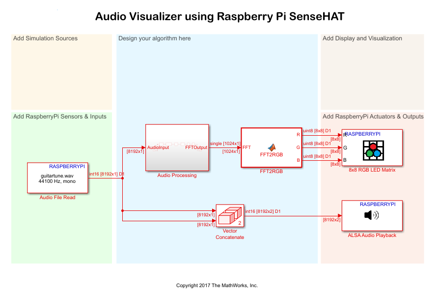

Audio Visualizer Using Raspberry Pi™ Sense HAT
This example shows how to simulate an audio visualizer on Sense HAT using the Simulink® Support Package for Raspberry Pi™ Hardware.
Contents
Introduction
Audio visualization is a technique of displaying an image or an animation that is synchronous to audio data being played. Using this technique, the Simulink® model displays colored bars on the 8-by-8 LED matrix on Sense HAT. The movement of the bars is synchronized with the audio being played.
Audio Visualizer
In this example model, the Audio File Read block reads the specified audio file and outputs it as Pulse Code Modulation (PCM) data on the Raspberry Pi™ hardware. The block is configured to read 8192 audio samples at each time step.
The Audio Processing subsystem computes a Fast Fourier Transform (FFT) across the samples of audio data. The subsystem converts the most significant 1024 samples from the computed FFT into logarithmic scale, reducing large dynamic variations in the frequency spectrum.
The MATLAB Function block, FFT2RGB, divides 1024 samples into 8 groups, and then calculates the length of each LED bar to be displayed on the Raspberry Pi™ Sense HAT.
The ALSA Audio Playback block plays the input audio through the default audio jack of the Raspberry Pi™ hardware. If the specified audio file is a mono file, convert it into stereo using the Vector Concatenate block. For example, in this model, the default audio file, guitartune.wav, is used. Because this file is mono, use the Vector Concatenate block to convert it to stereo.
Prerequisites
Before you start with this example, we recommend you complete the following examples:
Required Products
To run this example, you must have a DSP System Toolbox™ toolbox license.
Required Hardware
To run this example, you must have the following hardware:
- Raspberry Pi hardware
- Sense HAT
- Headphones or speakers
Configure and Run the Audio Visualizer Model
1. Connect a pair of speakers or headphones to the analog audio output of the Raspberry Pi™ hardware.
2. Plug the Sense HAT module into the GPIO pins of the Raspberry Pi™ hardware.
3. Open the Audio Visualizer model.

4. On the Simulink® model toolbar, select Tools > Run on Target Hardware > Options....
5. Browse to Hardware Implementation > Hardware board settings > Target hardware resources, and verify the connection settings.
6. In the Simulink® model, double-click the Audio File Read block. By default, the audio file specified is guitartune.wav. To play a different audio file, click Browse, and then select the required file from your computer. If the file that you select is a stereo file, remove the Vector Concatenate block from the model.
7. Double-click the ALSA Audio Playback block. In this model, the block sends the audio signal to the 'hw:0,0' audio device on the Raspberry Pi hardware. 'hw:0,0' is the default audio jack. To list the audio playback devices available on your Raspberry Pi™ hardware, enter the following commands in the MATLAB® command window.
r = raspberrypi; a = listAudioDevices(r,'playback')
The resulting structured array contains the names and numbers of the available audio playback devices on your Raspberry Pi™ hardware.
A sample output is shown here:
a(1)
Name: ' bcm2835 - bcm2835 ALSA...'
Device: '0,0'a(2)
Name: ' bcm2835 - bcm2835 ALSA...'
Device: '0,1'a(3)
Name: ' USB-Audio - USB PnP Sound Device...'
Device: '1,0'This result indicates that three audio playback devices are available on the Raspberry Pi™ hardware. The ALSA audio device numbers are '|0,0|', '|0,1|', and '|1,0|'. The first two devices correspond to the analog audio output and the HDMI output of the Raspberry Pi™ hardware. The third device is a USB audio dongle. To use the playback device 0,0, double-click the ALSA Audio Playback block, and specify the Device name parameter as 'plughw:0,0'.
8. On the Simulink® model toolbar, click the Deploy To Hardware button. This action builds, downloads, and runs the model on the Raspberry Pi hardware. The audio starts playing, and the colored bars on the 8x8 LED matrix of Sense HAT are displayed in synchronization with the audio being played.
Other Things to Try
- Change the audio source file in Audio File Read block to your favorite music file.
- Replace the Audio File Read block with ALSA Audio Capture block from the Raspberry Pi block library to experience real-time speech visualization.
Summary
This example demonstrated how to configure the Simulink® model to simulate an audio visualizer on Sense HAT.